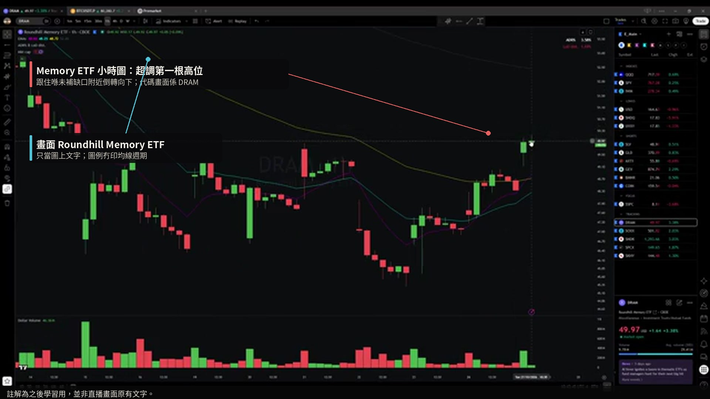

概要
靜音翻圖之後，單獨指出呢個位置
1:23:55 佢話有啲鍾意呢隻 memory ETF：超調咗第一根小時 K 線高位，而家就在未補缺口附近倒轉向下。畫面代碼係 DRAM，標題寫住 Roundhill Memory ETF。
圖一
Memory ETF 小時圖：超調後喺缺口倒轉
直播 1:23:55

原話
Now I kind of like this memory ETF overshooting the first hourly candle high and now reversing lower right at this unfilled gap level.
而家我有啲鍾意呢隻 memory ETF：佢超調咗第一根小時 K 線高位，而家就在呢個未補缺口位置倒轉向下。
點樣讀
重點係兩個位置疊埋：超調第一根小時高位，同喺未補缺口倒轉。
畫面代碼 DRAM，標題 Roundhill Memory ETF，都只當圖上文字。
附註
注意事項
- 講完之後又掃過 USO、SPCX 五分鐘等，冇新嘅獨立分析點，唔另開一科。